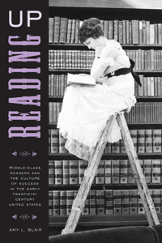

The role of cultural elites and journalists in promoting reading as a means of self-improvement and social mobility
The role of cultural elites and journalists in promoting reading as a means of self-improvement and social mobility


 The role of cultural elites and journalists in promoting reading as a means of self-improvement and social mobility
The role of cultural elites and journalists in promoting reading as a means of self-improvement and social mobility

|  |
Reading UpMiddle-Class Readers and the Culture of Success in the Early Twentieth-Century United StatesAmy L. Blairpaper EAN: 978-1-43990-668-2 (ISBN: 1-43990-668-8) |
"This well-researched, thoughtful book adds substantially to our understanding of middlebrow culture. It also has much to teach us about the complexities and variabilities of reading as a social practice. Beautifully written and intellectually deft, Reading Up will interest everyone engaged in the study of American literature and its relationship the larger culture."
—Janice Radway, Communication Studies, Northwestern University, and author of A Feeling for Books: The Book-of-the-Month Club, Literary Taste and Middle-Class Desire
A person who reads a book for self-improvement rather than aesthetic pleasure is �reading up.� Reading Up is Amy Blair's engaging study of popular literary critics who promoted reading generally and specific books as vehicles for acquiring cultural competence and economic mobility. Combining methodologies from the history of the book and the history of reading, to mass-cultural studies, reader-response criticism, reception studies, and formalist literary analysis, Blair shows how such critics influenced the choices of striving readers and popularized some elite writers.
Framed by an analysis of Hamilton Wright Mabie's role promoting the concept of �reading up� during his ten-year stint as the cultivator of literary taste for the highly popular Ladies' Home Journal, Reading Up reveals how readers flocked to literary works that they would be expected to dislike. Blair shows that while readers could be led to certain books by a trusted adviser, they frequently followed their own path in interpreting them in unexpected ways.
Excerpt available at www.temple.edu/tempress
"A well-written, thoroughly researched, and informative study of the relation between fiction reading, social mobility, and middle-class ambition in the decades marking the turn from the nineteenth to the twentieth centuries in the U.S. Reading Up offers a compelling investigation into the historically specific development of a strategy of reading designed and promoted for bourgeois readers. Blair�s study discloses not only Hamilton Wright Mabie's role in the promotion of the concept of �reading up� but also his own responses to novels and his reading strategies as they played out in his columns. Reading Up is an original and impressive contribution, and it should find a place on the shelves of libraries, university scholars, and graduate students."
—James Machor, Professor of English at Kansas State University and author of Reading Fiction in Antebellum America: Informed Response and Reception Histories, 1820-1865
"Blair skillfully brings reception studies/book history methodologies to bear on canonical writers, providing a popular literary history of the Unites States around the turn of the century. Readers get a good overview of American literary criticism and how Hamilton Wright Mabie, his contemporaries, and subsequent critics have situated themselves in these debates. The �readings� of Wharton, Howells, and James emerging from Reading Up are innovative, provocative, and some of the most interesting I�ve seen in years."
—Erin A. Smith, Associate Professor of American Studies at the University of Texas at Dallas, and the author of Hard Boiled: Working Class Readers and Pulp Magazines
"Blair concludes that even today, programs such as Oprah's Book Club indicate that esteem for reading is based on its emotional and social value as well as its material: i.e., the widespread internalization of 'reading up.'... Recommended."
—Choice
"Reading Up is certainly about books, but it is also about a way of using books that reveals the do-it-yourself nature of popular literary advice.... Blair has tapped into a fascinating turn-of-the-century relationship.... Scholars interested in the business of literature, the hierarchies of culture, and the construction of the striver as a social type will find Reading Up to be a good investment."
—H-Net
"In this stimulating work, Amy L. Blair examines the complex interactions between authors, critics, and the reading public in the early twentieth century....The bulk of this book is a careful analysis of the advice columns [Hamilton Wright] Mabie penned over ten years (1902-1912) for the Ladies Home Journal.... Well-written, creative, and persuasive, Blair uncovers the often implicit negotiations between reviewers, authors, and readers. Her work significantly enriches our understanding of socially ambitious reading in the decades before middlebrow culture."
—Information & Culture
"Blair emphasizes the importance of contextualizing books and readers in their own cultural moment.... Her idea of the 'highbrow bestseller' is one of several extremely useful concepts (the 'readable James' is another!) through which Reading Up highlights the blurry line between aesthetic taste, cultural capital, and financial ambition in the 'culture of success."
—American Literary Realism
"Reading Up explains with force and wit why specialists in reception, but also literature scholars and social historians, should return to [Hamilton Wright] Mabie.... Blair derives insights grounded in Mabie�s columns.... Reception scholars will admire Blair�s lucid and well-substantiated reconstructions of the plots and characters.... Reading Up makes a powerful contribution to existing knowledge of a 'messy fracturing of the literary landscape at a very early point in the 1890s and 1900s'."
—Reception
"Blair is detailed in her examination of [Hamilton Wright] Mabie�s opinions and in her analysis of how he misread or reinterpreted his subjects in service of his goals.... What is most significant for periodical studies in Blair�s work is the insight it provides into the culture wars of the turn of the last century."
—American Periodicals
"In her thoroughly researched and impressively readable Reading Up Amy Blair takes [Hamilton Wright] Mabie�s long-forgotten career as an occasion to explore and define a style of reading so foundational as to be virtually invisible....Blair convincingly posits Mabie as a proto-Oprah Winfrey, pointing out how Winfrey herself is able to assert the value of reading without ever actually having to defend that assertion chiefly because of the cultural heavy lifting her predecessor Mabie did roughly a century ago."
—American Studies
"Amy L. Blair is a close reader, curious researcher, and careful thinker.... Reading Up contributes substantially to our understanding of what reception theory can do to flesh out a historical epoch. It illustrates how intentional misreading can be used in service of a social agenda and makes us�lay readers as well as scholars�aware of our own intense, yet unconscious desires to read up."
—Journal of American Culture
"Amy Blair�s Reading Up begins with an account of Hamilton Wright Mabie�s ten-year stint as literary advisor for the Ladies Home Journal. In that capacity, from 1902 until 1912, as Blair explains, Mabie, a minor though erudite and prolific essayist and critic, had the job of recommending reading for the subscribers to the Journal�. This is an original and intriguing premise, and Blair follows up her introduction with a series of well-chosen case studies that illustrate both the aims of Mabie�s reading program and some of the challenges he faced.... [A] fascinating contribution to reception studies... [with] close readings to illustrate how taste is created, with the emphasis that taste is, as the Journal well understood, an important index of social class�.well worth reading."
—American Literature
Acknowledgements
Introduction: Cultivating Taste in a Mass-Market World
1. Mr. Mabie Tells What to Read
2. The Compromise of Silas Lapham
3. James for the General Reader
4. Misreading The House of Mirth
5. The Comforts of Romanticism
Epilogue: Reading Up into the Twenty-first Century
Appendix A: The Mabie Canon
Appendix B: �Novels Descriptive of American Life� (November 1908)
Notes
Bibliography
Index
Amy L. Blair is an Assistant Professor of English at Marquette University in Milwaukee.
Literature and Drama
American Studies
Cultural Studies
© 2015 Temple University. All Rights Reserved. This page: http://www.temple.edu/tempress/titles/2149_reg.html.